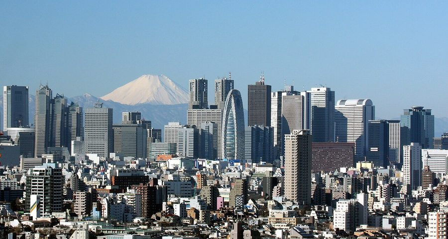
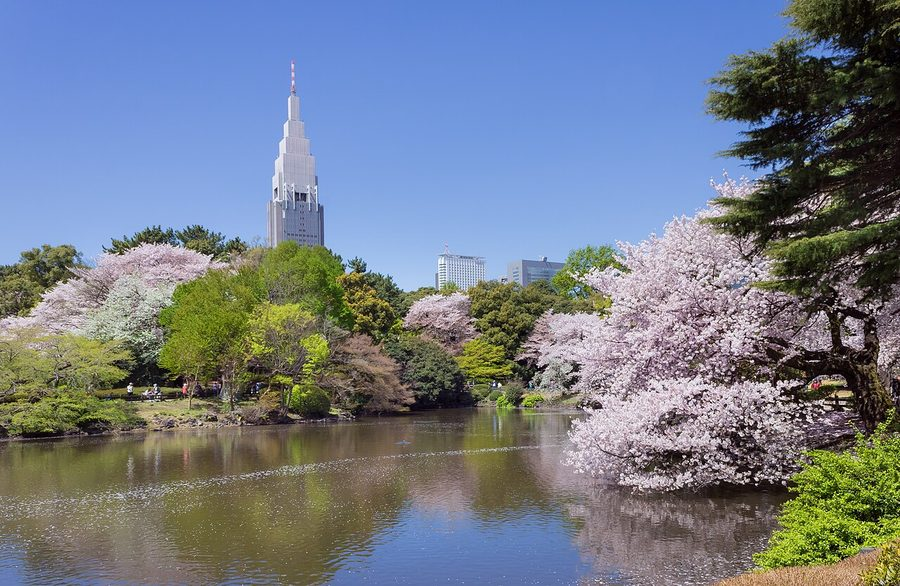
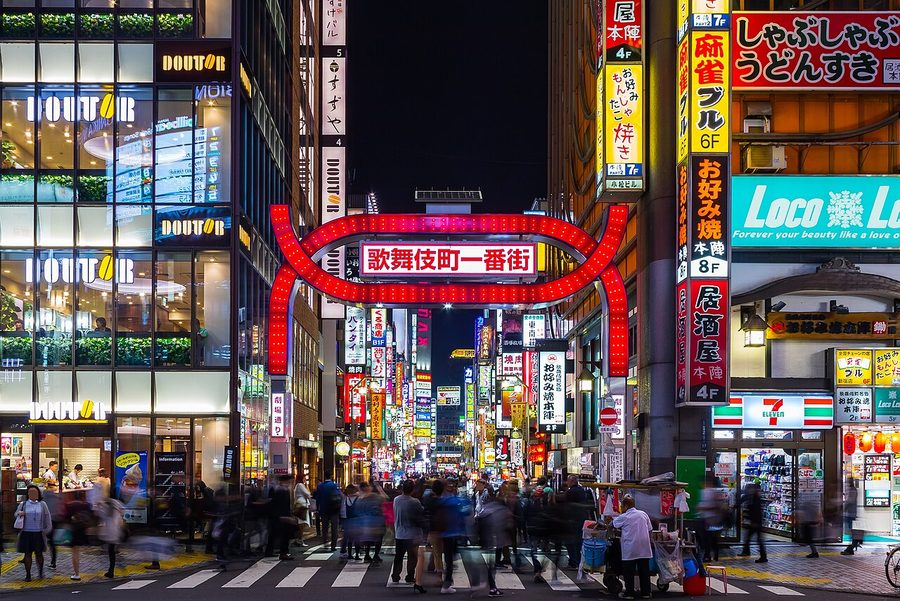
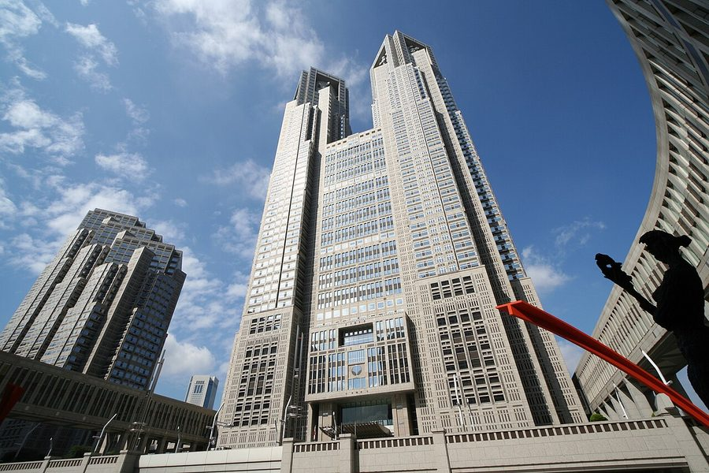

東京都新宿区の日帰り温泉・銭湯・サウナ（35件）
寄り道スポット検索アプリ「ヨッテコ」の収録データから、東京都新宿区の日帰り温泉・銭湯・サウナを営業時間・料金つきで一覧にしました（2026年8月時点）。
最も安いのはゆ～ザ中井（550円）。最も遅くまで入れるのはプライベートサウナ TRIBAL（翌5:30まで）。朝風呂ならSAUNA XX サウナエックス四ツ谷店（6:00開店）。
東京都新宿区はどんなまち？
数字で見る🔍東京都新宿区
まちの横顔




- 地形と気候: 新宿区は武蔵野台地と江戸低地の境界に位置し、淀橋台や豊島台といった高台が広がっています。区内最高地点は標高44.6メートルの箱根山（戸山一丁目）で、神田川・妙正寺川が低地部分を流れています。年間平均気温は約15℃で、東京都の気象観測所がある大手町付近より約1℃ほど低いとされています。
- 副都心と繁華街: 江戸時代に甲州街道の宿場町として栄えた新宿は、現在は渋谷・池袋とともに東京の3大副都心の一角です。世界最大級の利用者数を誇る新宿駅の西口には超高層ビルが林立するオフィス街・西新宿が広がり、東口の歌舞伎町は歓楽街として知られ、日本最大級の繁華街を形成しています。
- 地域の成り立ちと多国籍性: 新宿区は1947年、旧牛込区・四谷区・淀橋区の3区が合併して誕生しました。神楽坂や早稲田を含む牛込地域には古くからの町並みが残り、四谷地域には新宿御苑や明治神宮外苑があります。外国人住民の割合は都内で最も高く、大久保・新大久保周辺には職安通りを中心にコリアタウンなどアジア系のコミュニティが形成されています。
寄り道充実度（全国偏差値）
偏差値・順位は、ヨッテコ収録データ（2026年8月時点・26,033件）を市区町村別に集計した施設数の全国分布（1,728市区町村）から毎回算出しています。カードを押すとカテゴリ別の分析に切り替わります。
日帰り温泉から見た東京都新宿区
区内の日帰り温泉は35件、全国54位タイ（上位3.1%）。——寄り道できる湯の数は、全国でも上位クラス。
- 露天風呂を備える店は14%。全国水準の46%より少なめです。武蔵野台地と江戸低地の境界に位置し、標高44.6メートルの箱根山を最高地点とする区。湯を楽しむ舞台は、屋外ではなく屋内に寄っています。
- 天然温泉を使う店は6%で、全国水準（67%）を下回ります。歓楽街・歌舞伎町と新宿御苑の自然を併せ持つ、日本最大級の繁華街を抱える区。銭湯やスーパー銭湯が寄り道先の中心、という構成でしょうか。
- 77%の店にサウナがあります。全国水準は52%です。年間平均気温は約15℃、大手町付近より約1℃低いとされる区。整えて帰るという寄り道の仕方が、77%という数字に出ています。
- 97%の店が21時を過ぎても開いています。全国水準は40%です。移動が遅くなった日でも、間に合う湯が見つかりそうです。
- 30件で確認できた入浴料の中央値は550円で、全国水準（650円）を15%下回ります。ふだんづかいの価格帯が中心です。
出典: 施設データ=ヨッテコ収録データ（26,033件・2026年8月時点）。偏差値・全国順位・全国水準は全1,728市区町村の分布から毎回算出。 / 人口=総務省「住民基本台帳に基づく人口、人口動態及び世帯数」（2026年1月1日現在） / 面積=国土地理院「全国都道府県市区町村別面積調」（2026年4月1日時点） / 年間平均気温=日本語版Wikipedia「新宿区」（https://ja.wikipedia.org/wiki/新宿区、2026年8月21日取得） / まちの解説=同記事より作成（CC BY-SA 4.0） / 写真=Wikimedia Commons（各キャプションに作者・ライセンスを記載）
曜日別の営業施設数
| 月 | 火 | 水 | 木 | 金 | 土 | 日 |
|---|---|---|---|---|---|---|
| 30 | 35 | 32 | 33 | 33 | 31 | 35 |
月曜日が最も休みが多く（各5件が定休）、年中無休は21件です。※営業時間データのある35件で集計
入浴料金の分布（大人）
| 501〜800円 | 17件 | |
| 801〜1,200円 | 2件 | |
| 1,201円以上 | 11件 |
料金が確認できた30件で集計。
施設一覧
| 施設 | 営業時間 | 料金（大人） |
|---|---|---|
| 510グループAKスパ サウナ 新宿歌舞伎町の510グループが運営するサウナ・大浴場施設。プライベート休憩室（キャビン）や仮眠室も利用できる。 | 00:00〜24:00 | 1,100円 |
| Prus Sauna 歌舞伎町タワー店 サウナ | 00:00〜24:00 | — |
| SAUNA XX サウナエックス四ツ谷店 サウナ | 06:00〜25:00 | 2,420円 |
| TOTOPA都立明治公園店 サウナ 都立明治公園内のととのえるスパ。複数のサウナ室と外気浴スペース、ラウンジなどが充実した施設。キャッシュレス決済のみ対応 | 11:00〜23:00 | 2,178円 |
| sauna & body communication etoe サウナ | 10:00〜26:00 | — |
| yksi SAUNA&STAY ユクシサウナ&ステイ サウナ 完全個室のフィンランド式サウナ。ロウリュが体験でき、水風呂と休憩スペースがひと部屋に揃った贅沢な時間が過ごせる | 07:00〜24:00 | 4,900円 |
| あかざる 神楽坂SAUNA サウナ 歴史ある料亭を再生したハイブリッドサウナ施設。1階はプライベート式、2階は男性専用パブリック式。 | 13:00〜23:00（月休） | 1,500円 |
| ゆ～ザ中井 露天風呂サウナ 3種類のジェットバスと男女日替わりの露天薬湯が特徴。広めのサウナと水風呂も完備。 | 15:00〜25:00（木休） | 550円 |
| アパホテル新宿歌舞伎町タワー 露天風呂 | 09:00〜18:00 | — |
| カプセルホテル レディース510 サウナ 新宿駅周辺の複合サウナ・カプセル施設。大浴場・サウナ・休憩室などを時間制で利用できる。 | 00:00〜24:00 | 1,100円 |
| グランカスタマ 歌舞伎町店 新宿歌舞伎町のネットカフェとサウナが融合した複合施設。温泉ではなく、温浴効果を高めるジェットバスを備える。 | 00:00〜24:00 | — |
| サウナセンター新大久保 サウナ 男性専用のカプセルホテル兼サウナ施設。ドライサウナ、スチームサウナ、水風呂が完備。 | 00:00〜24:00 | 1,800円 |
| ソロサウナtune 神楽坂店 サウナ フィンランド式の没入空間で、ダークグレーの壁と間接照明で外界からの刺激を遮断した完全個室サウナ。 | 08:50〜23:00 | 5,000円 |
| プライベートサウナ TRIBAL サウナ 新宿歌舞伎町のフィンランド式セルフロウリュサウナで、完全個室で自分のペースで楽しめる。 | 12:00〜29:30 | 4,800円 |
| 万年湯 新大久保駅近くの隠れ湯。都心にありながら軟水を使用した落ち着きのある銭湯。ジェット風呂や電気風呂など多様な浴槽を備えてい… | 15:00〜24:00（土休） | 550円 |
| 三の輪湯 サウナ いつも清潔で、ミスト風呂が人気。日曜はハーブ湯を実施。浴槽設備の種類が豊富で、大きなテレビとBGMでリラックス。 | 15:30〜25:00 | 550円 |
| 世界湯 サウナ | 15:00〜25:00（木休） | 550円 |
| 大星湯 サウナ 新宿の銭湯。井戸水を沸かしたお湯で、備長炭風呂が特徴。高齢者見守り事業や、AED最新型を設置。 | 15:00〜23:45（月休） | 550円 |
| 安心お宿 Tokyo Man 新宿駅南口店 サウナ 新宿駅直近のカプセルホテル。大浴場に人工温泉とサウナを備え、館内にはラウンジ、ドリンクバー、朝食カレーなどの設備が充実。… | 00:00〜24:00（水休） | — |
| 弁天湯 露天風呂サウナ 男女日替わりで異なる浴室を楽しめる。サウナとミストサウナが日替わりで利用可能。 | 14:30〜25:00（水休） | 550円 |
| 新宿区役所前カプセルホテル サウナ カプセルホテルとサウナ・大浴場を備えた施設。女性専用フロアもあり。 | 15:00〜24:00 | 600円 |
| 新宿天然温泉 テルマー湯 天然温泉サウナ | 00:00〜24:00 | 3,100円 |
| 新宿落合温泉 松の湯 天然温泉 2023年創業100周年を機に大規模改修。素銭湯のコンセプトで設計。2025年11月に温泉ライセンス取得。 | 15:30〜24:00（土休） | 550円 |
| 東宝湯 | 15:00〜24:00 | 550円 |
| 柳湯 井戸水で沸かしたお湯が自慢。ハイパワージェットと電気風呂の組み合わせが人気。世界遺産プリトヴィッツェ湖群を背景にした浴槽… | 14:30〜23:00 | 550円 |
| 栄湯 露天風呂サウナ 新宿区落合南長崎駅から徒歩8分。2017年11月にリニューアルオープン。軟水を使用し、2つの浴室は週替わりで土曜日に男女… | 15:00〜24:00（月・金休） | 550円 |
| 熱海湯 新宿区神楽坂の昔ながらの宮造り銭湯。ロケ地としても使用される。薪で沸かした熱めのお湯と備長炭風呂が特徴。昭和情緒漂うレト… | 14:45〜24:00（土休） | 550円 |
| 福の湯 サウナ 新宿区下落合の大正ロマン風銭湯。地下100メートルの良質な井戸水が自慢。 | 16:00〜24:00（月休） | 550円 |
| 竹の湯 サウナ 神楽坂からも徒歩4分。日替わり薬湯が人気。乾式サウナは男湯のみ、ミストサウナは男女別。 | 15:00〜22:30（金・土休） | 550円 |
| 第三玉の湯 露天風呂サウナ 新宿区神楽坂の銭湯。2018年11月リニューアル。高濃度炭酸泉と露天風呂が特徴。強力ジェットと冷えた水風呂が評判。銭湯ラ… | 15:00〜25:30（水休） | 550円 |
| 荒木町サウナ Logout（ログアウト） サウナ 深海をイメージした神秘的な空間で、忙しい日常からログアウトできる本格的なサウナ。静かな暗闇と青くゆらめく光に包まれ、心身… | 13:00〜23:00 ※曜日により異なる | 1,800円 |
| 金泉湯 庭園に鯉が5尾いる池と滝が流れる、環境が自慢の銭湯。週替わりで薬湯を提供。 | 14:30〜22:00（月休） | 550円 |
| 韓国レディスサウナ ルビーパレス サウナ 新宿大久保の女性専用アカスリ・エステ施設。24時間営業で、サウナと多様なマッサージサービスを提供。 | 07:30〜23:00 | 1,320円 |
| 馬場サウナ&ワークカフェ サウナ サウナとコワーキングカフェを同一フロアで融合させた施設。ビジネスと癒しの両立を実現。 | 08:00〜23:00 | 1,480円 |
| 黄金湯 新宿 サウナ | 12:30〜24:00 | 550円 |